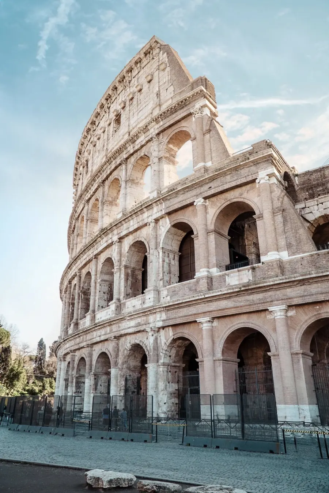

Todo tu viaje, a la hora.
Vuelos, hoteles, itinerario, reservas, gastos y checklist de cada viaje en un solo panel. Viajoo funciona sin conexión y se instala en el móvil sin pasar por ninguna tienda.
Del Coliseo a Petra, cada viaje en su sitio.
Viajoo busca fotos reales de tu destino, tus hoteles y tus actividades para que cada viaje tenga su propia cara.

FCOPlanifícalo todo en un solo sitio.
Vuelos, hoteles, actividades y la maleta. Todo lo que hoy tienes repartido entre correos, capturas y notas.
- Vuelos y hotelesHorarios, vuelta, entrada, salida y código de reserva.
- Itinerario por díasActividades con hora y lugar, ordenables arrastrando.
- ChecklistCon una plantilla lista para no olvidar nada.
Contigo, incluso sin cobertura.
La app abre sin internet y te dice qué toca hoy. El mapa del destino se descarga antes de salir.
- Mapa sin conexiónConsulta el destino sin gastar datos.
- Aviso del díaSi hoy tienes vuelo o actividad, lo ves nada más abrir.
- Descubre el destinoSitios cercanos y conversor de moneda con el cambio del día.
Las cuentas claras y el viaje guardado.
Reparte gastos con quien viajas, exporta el viaje y tenlo a salvo en tu cuenta.
- Gastos compartidosPor categoría, y quién le debe a quién.
- PDF y calendarioEl viaje entero en PDF o en tu calendario.
- Copia en la nubeCon tu cuenta, en todos tus dispositivos.
Para viajar acompañado y sin sorpresas.
Las funciones Pro necesitan una cuenta gratuita y, por ahora, no tienen ningún coste. Consulta las condiciones de suscripción.
Viajes compartidos
Invita con un código de 6 caracteres o un QR y planificad el mismo viaje.
Copiloto con IA
Una propuesta de itinerario a partir del destino, las fechas y tus gustos.
Estado de vuelo
Retrasos y puerta de embarque sin salir de la app.
En tu pantalla de inicio en tres pasos.
Viajoo es una app web: no pasa por la App Store ni por Google Play, se instala desde el navegador y se actualiza sola.
Lo que suele preguntarse.
¿Necesito crear una cuenta?
No. Viajoo funciona completa guardando todo en tu dispositivo. La cuenta sirve para tener copia en la nube, usar tus viajes en varios dispositivos, verlos desde esta web o usar las funciones Pro.
¿Funciona sin internet?
Sí. Una vez abierta, la app y tus datos están en el dispositivo. Solo necesitas conexión para lo que depende de fuera, como fotos nuevas, el cambio de moneda o el estado de un vuelo.
¿Puedo usar Viajoo desde el ordenador?
Sí. Entra en la web con la misma cuenta de la app: puedes crear y editar viajes, y todo se sincroniza con el móvil.
¿Cuánto cuesta?
Las funciones básicas son gratuitas. Las funciones Pro no cobran nada por ahora; tienes el detalle en las condiciones de suscripción.
¿Qué pasa con mis datos?
Por defecto no salen de tu dispositivo. Si activas la cuenta, se guardan en Firebase (Google) bajo tu usuario. Todo el detalle está en la política de privacidad.
¿Qué pasa si borro los datos del navegador?
Sin cuenta, se perderían los viajes de ese dispositivo. Con la cuenta iniciada, al volver a entrar se descargan de la nube.
Tu próximo viaje empieza aquí.
Crea el viaje, añade el vuelo y el hotel, y llévalo todo en el bolsillo.
Entrar en Viajoo →